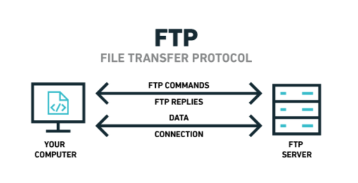

File Transfer Protocol (FTP)
Definition: File Transfer Protocol (FTP) is a standard network protocol used for transferring files between a client and a server over a computer network. It allows users to upload, download, and manage files on a remote server.
How it works: FTP operates on a client-server model. The client initiates a connection to the FTP server and sends commands to perform various file operations, such as uploading or downloading files. The server responds to these commands and facilitates the transfer of files between the client and the server.
Examples: Some common FTP clients include FileZilla, WinSCP, and Cyberduck. These clients provide a user-friendly interface for users to connect to FTP servers and manage their files. FTP is widely used for website maintenance, file sharing, and data backup purposes.
